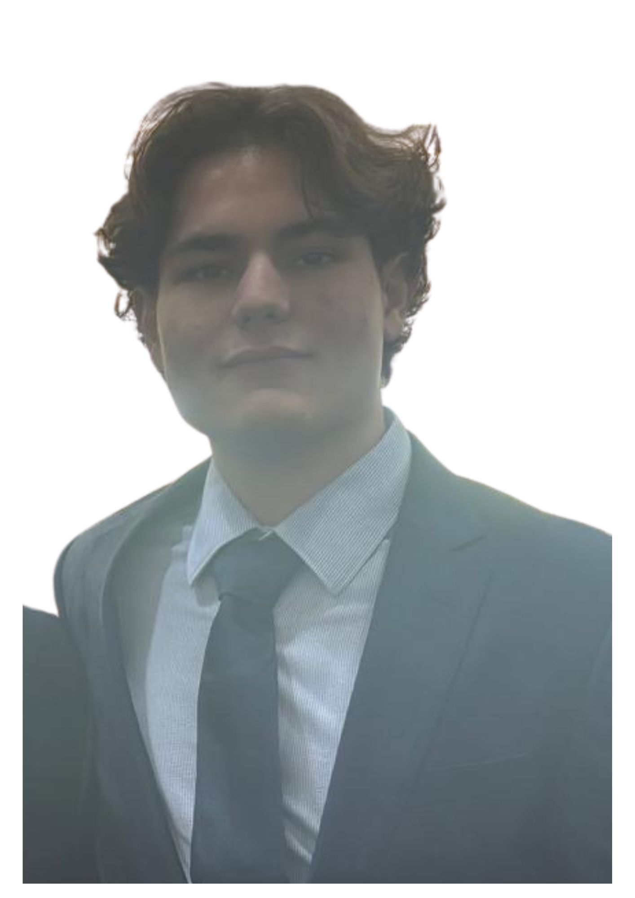
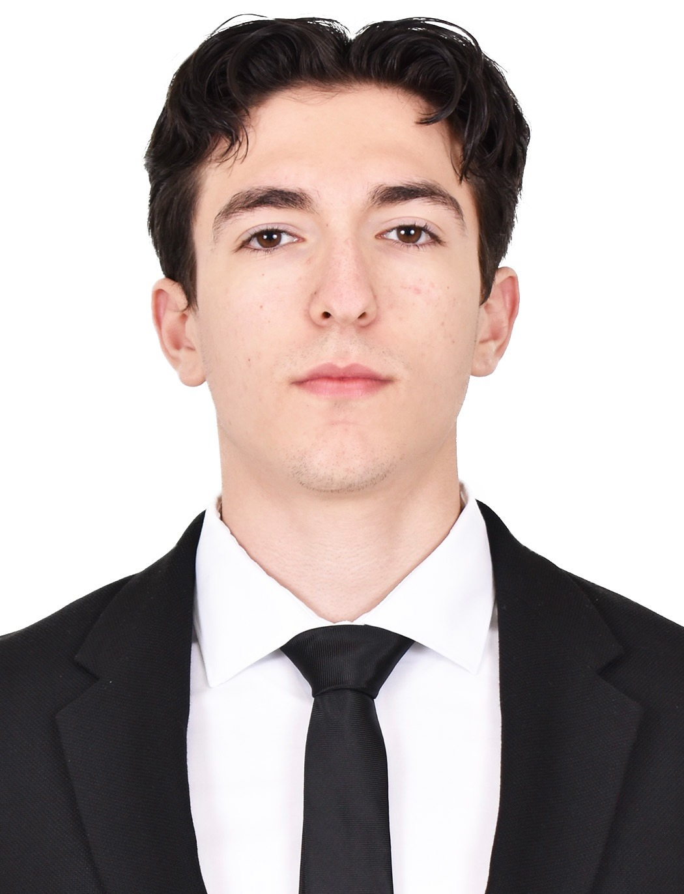

Perfiles Profesionales

Aldo Karim
ITC
[Semblanza de Aldo — máximo 80 palabras sobre su background e intereses en la ingeniería.]

Alejandro Montoya
IRS
En la ingeniería, me interesa la creación de sistemas tecnológicos automatizados, como robots, drones y vehículos autonomos. Me intersa la programación y ML.

Roberto Ochoa
ITC
[Semblanza de Roberto — máximo 80 palabras sobre su background e intereses en la ingeniería.]

Carlos Taboada
ITC
Apasionado por la ciberseguridad y la protección de sistemas. Mi interés se centra en el desarrollo de software seguro y la implementación de estrategias para defender la infraestructura digital contra amenazas. Busco aplicar mis habilidades para crear soluciones tecnológicas robustas y confiables.
Proceso de Solución del Reto
- [Paso 1 — Descripción del primer paso de ingeniería que siguió el equipo para entender y plantear el problema.]
- [Paso 2 — Descripción del diseño y modelado matemático de la partícula confinada y sus tres fases.]
- [Paso 3 — Descripción del proceso de programación: cómo se construyó el código y las decisiones técnicas tomadas.]
- [Paso 4 — Descripción de cómo se acoplaron las tres fases de confinamiento en una solución integrada.]
- [Paso 5 — Descripción de las pruebas, ajustes y validación del resultado final.]